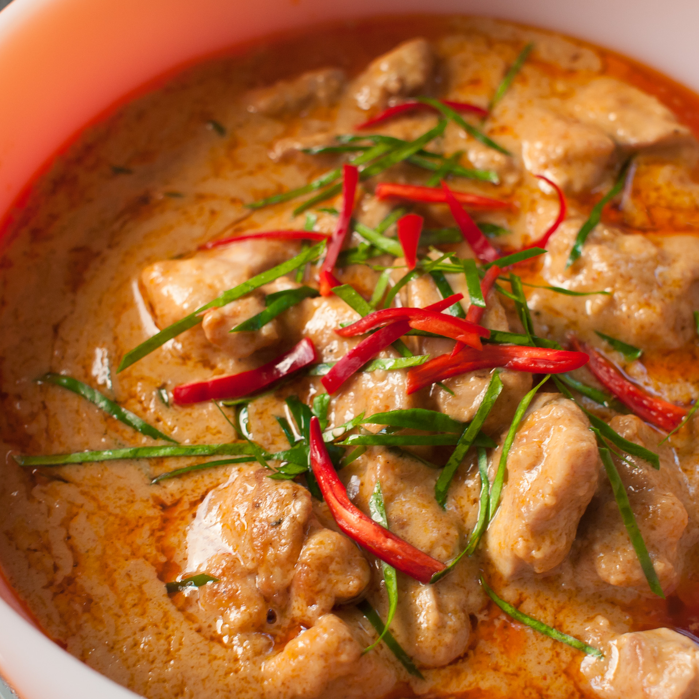

Phanang curry is my most favorite Thai dish. It is very simple to make, yet complex in its fragrance and flavor. Its color may look intimidating, but the heat is only warm. Salty, creamy, and spicy at the right amount.
Once one understands how to cook it, they can grasp the idea on how to cook most Middle region Thai curries.
Please note that you don't have the right amount or add them all. Thai cooking has no fixed methods and can be adjusted to one liking. Add little by little until you get the perfect flavor for yourself.
We don't add it all right away because in case it's already creamy enough or too creamy, we can choose to add or not add it later
Tip: we can slice kaffir lime leaves into thin slices before hand and garnish the curry on top at the end for a better presentation